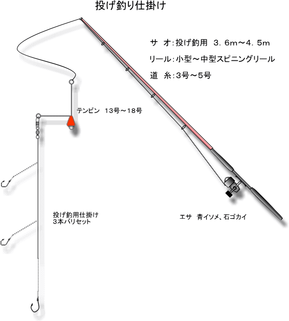

南紀地方では主にシロギス・ハゼ・コチなどを狙う「投げ釣り」。 あまり遠くまで投げずにちょいと投げる釣りなので「ちょい投げ」とも言われています。 ウキ釣りやサビキ釣りでは届かないポイントまで投げれる為、上手く投げれた時は爽快です。 釣れるポイントを探りながらの釣りになります。どこがよく釣れるのか探しながら釣るのも楽しみの一つ。 海底にいる魚が釣れます。 ※底が砂地のポイントを選んでください。頻繁に根に掛かり仕掛けが切れる事もあります
トップページ